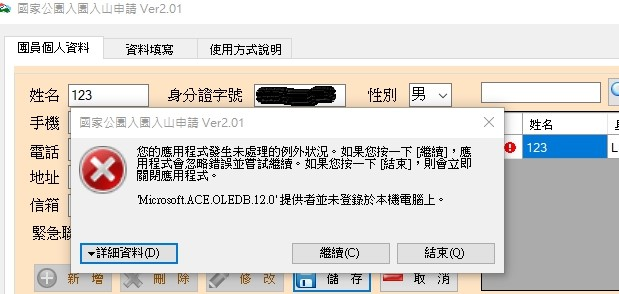
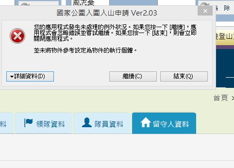

Q.Microsoft Ace OLEDB 12.0 提供者並未登錄於本機電腦上
A.請試著安裝 Microsoft Access Database Engine 2010 可轉散發套件
下載

Q並未將物件參考設定為物件的執行個體
A.國家公園網頁在熱門時段有時會來不及反應回饋程式,請稍後再試
Q.從類型DBNull 至類型 String 的轉換是無效的
A.請檢查隊員資料沒有沒建檔齊全
有使用上的問題請 MAIL k765107@gmail.com